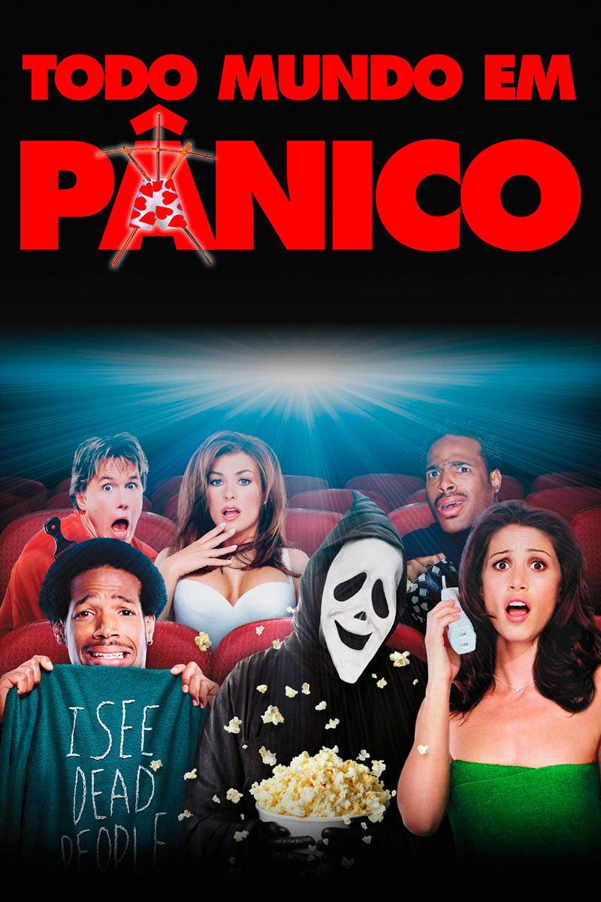
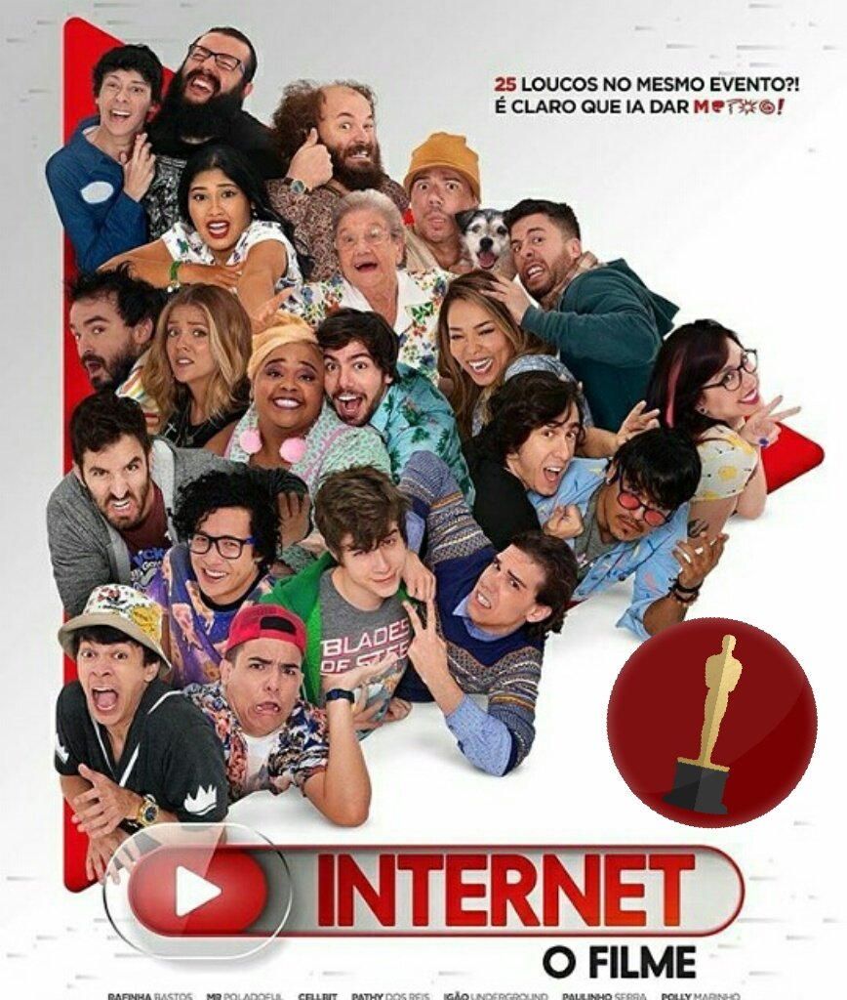

Gente Grande

- Data de lançamento: 24 de setembro de 2010 (Brasil)
- Diretor: Dennis Dugan
- Duração: 1h 42m
- Gêneros: Comédia, Drama, Buddy
- Continuação: Gente Grande 2
- Produtores: Happy Madison Productions, Columbia Pictures, Relativity Media
Sinopse:
A morte do treinador de basquete de infância de velhos amigos reúne a turma no mesmo lugar que celebraram um campeonato anos atrás. Os amigos, acompanhados de suas esposas e filhos, descobrem que idade não significa o mesmo que maturidade.
Todo Mundo em Pânico

- Data de lançamento: 22 de setembro de 2000 (Brasil)
- Diretor:Keenen Ivory Wayans
- Distribuidores:Dimension Films, Walt Disney Studios Motion Pictures, Miramax Home Entertainment
- Prêmios:MTV Movie Award: Melhor Participação Especial, Teen Choice Award: Escolha de Filme do Verão
- Diretor de Arte:Lawrence F. Pevec
- Indicações:MTV Movie Award: Melhor Beijo.
- Orçamento:19 milhões USD
Sinopse:
Depois do assassinato de uma bela colega de classe, um grupo de adolescentes desorientados descobre que há um assassino entre eles. A heroína Cindy Campbell e a sua turma de amigos tentam se proteger do perigo, mas Gail Hailstorm, uma repórter irritante, simplesmente não os deixa em paz.
Internet O FilmeKKKKkk

- Data de lançamento: 23 de fevereiro de 2017 (Brasil)
- Diretor:Filippo Capuzzi Lapietra
- Distribuidor:Paris Filmes
- Cinematografia:Bruno Tiezzi
- Diretoria de Arte:Carol Ozzi
- FigurinoFlavia Lhacer
Sinopse:
Em uma convenção de youtubers, os personagens entram em vários conflitos uma vez que todos eles estão em busca da fama a qualquer preço.